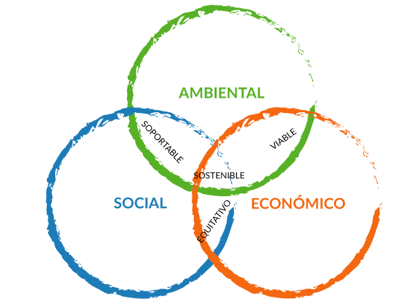

Sostenibilidad
Autor: Rocelia Díaz Girón

Definición:
La sostenibilidad consiste en satisfacer las necesidades de las generaciones actuales sin comprometer a las necesidades de las generaciones futuras, al mismo tiempo que se garantiza un equilibrio entre el crecimiento de la economía, el respeto al medioambiente y el bienestar social.